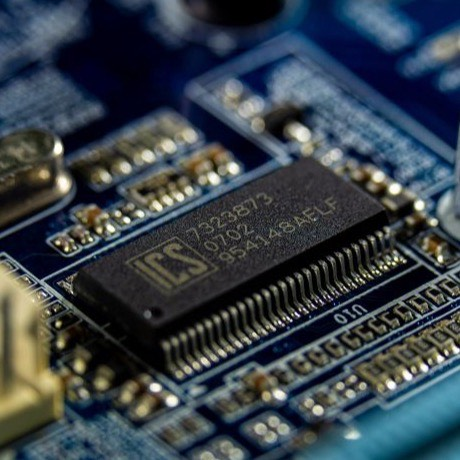
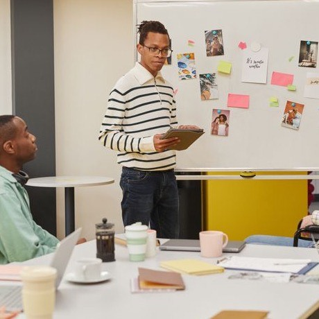

Modeller; veriyle, insanlarla ve kurumlarla birlikte çalışır. The Curious Lab bu ilişkileri inceleyerek yapay zekanın nasıl davrandığını, nasıl açıklanabileceğini ve çevresindeki sistemleri nasıl değiştirdiğini anlamaya çalışır.
Research areas
Araştırma alanları
Explanation, model and person in one loop
model → explanationmodel · explanation · human · evaluation
saliency
What we actually look at

Modelin ne yaptığı

Nasıl açıkladığımız
İnsana ne kazandırdığı
The Lab · 01 · XAI
Explanation is not decoration.
Bir açıklama, karşısındaki kişide doğru bir anlam oluşturmuyorsa işe yaramaz. Modelin gerçekte ne yaptığına sadık kalan, ölçülebilir ve insana dayanan açıklama yöntemleri üzerinde çalışıyoruz.
Faithfulness
Açıklama modelin gerçek davranışını mı anlatıyor, yoksa makul görünen bir hikâye mi üretiyor?
Human-grounded evaluation
Açıklamanın başarısı, onu okuyan kişinin daha doğru karar verip veremediğiyle ölçülür.
System-level explanation
Tek bir tahmin değil; birbirine bağlı sistemlerin bütün davranışı açıklanabilir olmalı.
The Lab · 02 · RL
Behaviour that is learned, not written.
Pekiştirmeli öğrenmede davranış kural olarak yazılmaz, etkileşimden öğrenilir. Bu da ödülün nasıl tanımlandığını ve ajanın nerede sessizce bozulduğunu asıl soru haline getirir.
Reward design
Ödül fonksiyonu davranışın gizli şartnamesidir; yanlış tanımlanan ödül, yanlış davranışı doğru sayar.
Generalisation
Eğitim ortamında çalışan bir politika, dağılım kaydığında ne kadar ayakta kalıyor?
Safe exploration
Öğrenmek denemeyi gerektirir; hangi denemelerin gerçek dünyada kabul edilebilir olduğunu tanımlamak gerekir.
The Lab · 03 · XRL
Why did the agent do that?
Açıklanabilir pekiştirmeli öğrenme, tek bir tahmini değil bir karar dizisini açıklamayı gerektirir. Bir eylemin nedeni çoğu zaman o anda değil, onlarca adım öncesindedir.
Policy-level explanation
Tek bir eylemi değil, politikanın genel eğilimini anlaşılır kılmak.
Temporal credit
Sonucu doğuran adımı, aradaki gürültünün içinden ayırt edebilmek.
Trust in autonomy
Otonom bir sistemin ne zaman devredilmeye hazır olduğuna kim, neye bakarak karar verir?
The Lab · 04 · AI in the World
Where models meet people.
Bir model kuruma girdiğinde asıl değişen şey çoğu zaman modelin kendisi değildir: kararlar, sorumluluk dağılımı ve çalışma pratikleri değişir. Yapay zeka okuryazarlığı da tam burada teknik bir konu olmaktan çıkar.
Organizational integration
Model süreçlerin neresine giriyor ve hangi kararı kim onaylıyor?
AI literacy
Teknik olmayan ekiplerin sistemi anlaması, değerlendirmesi ve gerektiğinde eleştirebilmesi.
Governance & oversight
Denetimin kâğıt üstünde değil, işleyen bir mekanizma olarak kurulması.
How we work
Çalışma biçimi
Question
Ne anlamamız gerekiyor? Her çalışma açık bir araştırma sorusuyla başlar.
Explore
Modeller, kanıtlar ve sistemler birlikte incelenir; bağlamından koparılmaz.
Share
Öğrendiklerimizi kaynağı ve sınırlarıyla birlikte erişilebilir hale getiririz.
Open research
Open by default.
Araştırma sırasında ortaya çıkan modelleri, veri çalışmalarını ve deneyleri mümkün olduğunca açık paylaşmaya çalışıyoruz.
The Curious Lab; yapay zeka, kurumlar ve toplum kesişimindeki soruları araştırır. Çalışmalar bağımsız yürütülür ve bulgular kaynağıyla birlikte paylaşılır.